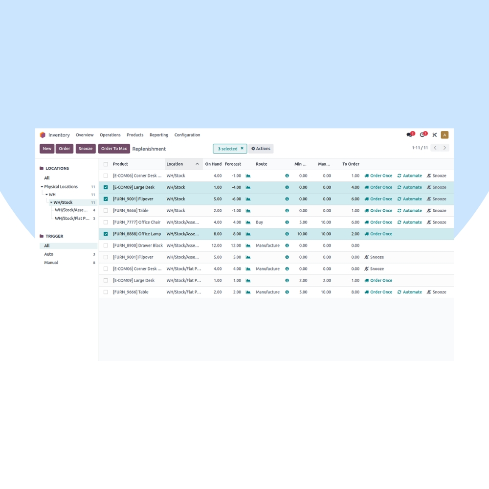
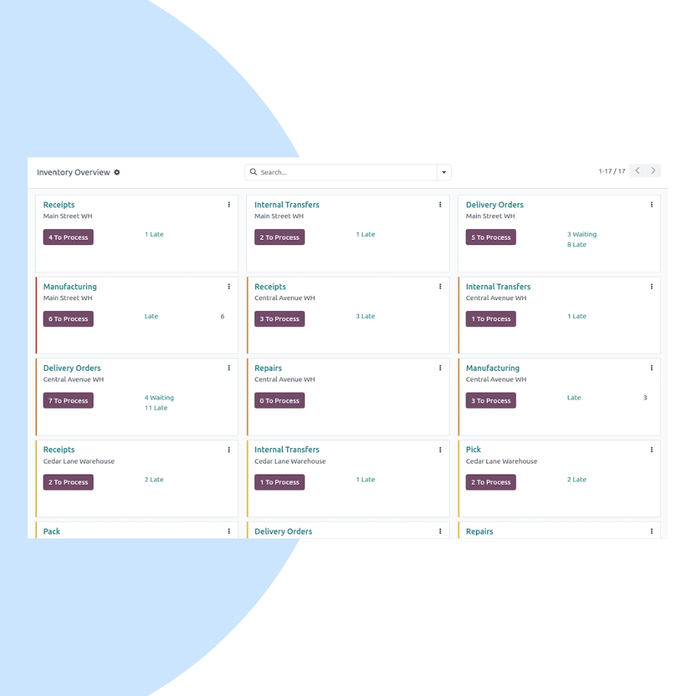
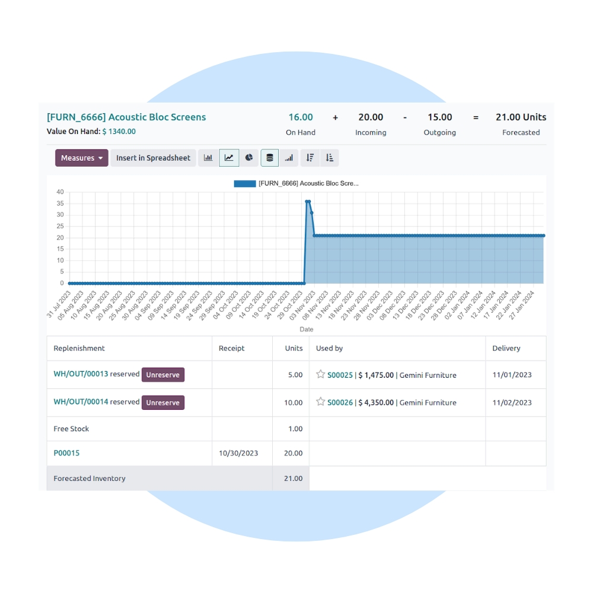

Gain real-time control over your inventory with Odoo Inventory. We help businesses automate stock movements, manage warehouses, reduce shortages, and improve fulfillment accuracy across all locations.
We configure Odoo Inventory to match your warehouse layout, logistics flow, and stock control rules. Integrate inventory seamlessly with Sales, Purchase, Manufacturing, POS, and Accounting.


Our inventory implementation ensures accurate stock levels, faster picking & packing, and full traceability across procurement, storage, and delivery.
Always know exact stock levels across locations.
Manage multiple warehouses and locations easily.
Speed up picking, packing, and transfers.
Avoid stockouts with smart reordering rules.
Track lots, serial numbers, and movements.
Connected with Sales, Purchase & Manufacturing.
We continuously optimize your inventory operations to reduce carrying costs, improve fulfillment speed, and maintain stock accuracy.
